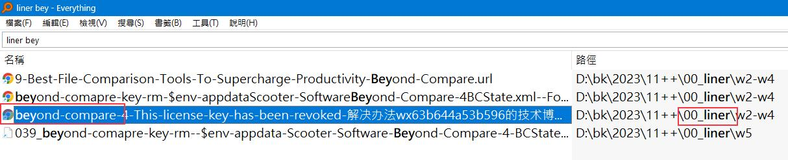

12-01-12_diff-compare-version
著手進行一個比較大的題目的時候呢，版本的問題就會再度跳出來，那早在上個月的時候都想到說每次要應付大專案呢，我們就要不斷地去比對版本之間的差異。這個功能很早以前就覺得說非做不可，耽擱了一陣子，資源都已經有了。
我們所需要的資源就是說我們要怎麼樣從捷徑當中擷取出路徑，bat要怎麼樣傳參數給powershell,傳送完之後呢，就在進行比對的任務。
並且比對的程序它的命令列怎麼寫？
這3份資源都已經有了，那就只剩下一把組合在一起。
最好應該之後，你有了具體的想要做的事情之後。給他命令之後，他就很快的就給你這方面的答案了，因為我這些資源過去放在一個比較比較舊的地方，突然之間有點忘記在那邊了。那在AI的協助之下呢，這樣子傳參數進行比對的流程被完成了，那由此一來呢，你也看到了說在一個大專案當中，當你必須要比對2個歷史版本的時候，就能夠很快地看到說他們之間的差異。
beyond-diff-bookmark-ref
liner-ref-for-beyondcompare-crack-key
